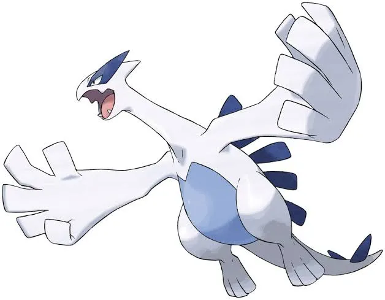
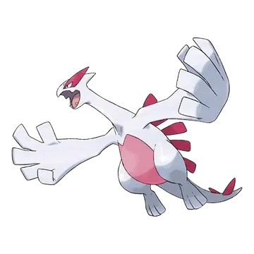

🧭 Quick Navigation
📖 Introduction
Lugia is one of the most iconic Legendary Pokémon in Pokémon GO. Originally introduced in Generation II, Lugia is famous for its incredible durability and powerful Psychic abilities.
Unlike many other raid bosses, Lugia takes significantly less damage, making it one of the toughest raids to defeat. Trainers need strong counters and a coordinated team to succeed.
In raid battles, Lugia is known for its extremely high defense stat, meaning it can take a lot of damage before being defeated. Because of this, trainers need strong attackers and well-coordinated teams to win the raid efficiently.
Lugia is weak to Dark, Ghost, Electric, Ice, and Rock-type attacks, making Pokémon such as Tyranitar, Darkrai, and Zekrom some of the best raid counters. Choosing the right Pokémon and understanding Lugia’s moveset can significantly improve your chances of success.
It is famous for:
- High bulk (very tanky)
- Strong Psychic and Flying moves
- Excellent PvP performance
This guide will help trainers understand Lugia’s raid mechanics, the best Pokémon to use against it, and how to maximize rewards after defeating this legendary Pokémon.
📌 Why Raid Lugia?
Yes, for these reasons:
- High CP legendary Pokémon
- PvP utility in Ultra League
- Chance to catch shiny Lugia
Focus on group raids for efficiency.
⚠️ Lugia Weaknesses
Lugia is weak to the following types:
| Category | Details |
|---|---|
| ❌ Weak to |
 Rock • Rock •
 Ghost • Ghost •
 Electric • Electric •
 Ice • Ice •
 Dark Dark
|
| ✅ Resists to |
 Fighting • Fighting •
 Ground • Ground •
 Grass • Grass •
 Psychic Psychic
|
⚠️ Important: Lugia’s Flying typing reduces the effectiveness of Fighting, Grass, and Bug moves.
Avoid relying on low-damage resisted types like Grass or Fighting for your raid team.
🧠 Lugia Raid Strategy
Lugia is a Psychic and Flying-type Legendary Pokémon known for its extremely high defense, making it one of the tankiest raid bosses in Pokémon GO.
Although Lugia has multiple weaknesses, it takes a long time to defeat due to its bulk.
- ⚡ Focus on high DPS Pokémon
- 👥 Use multiple trainers for faster completion
- ⚠️ Avoid low-damage teams — time can run out
💡 Expert Insight
Lugia is one of the bulkiest raid bosses, capable of absorbing massive amounts of damage. Its Psychic and Flying typing makes it weak to Electric, Ice, Rock, Ghost, and Dark moves.
Electric and Dark-type attackers are generally the most reliable choices for consistent damage.
🗡️ Best Lugia Counters
The best counters against Lugia are strong Dark- and Ghost-type attackers. Rock, Electric, and Ice types also perform well depending on weather conditions and team availability.
🌑 Dark-Type Counters (Top Choice)
Dark-type Pokémon are excellent against Lugia because they deal super-effective damage to its Psychic typing while resisting Psychic-type moves. High-attack Dark Pokémon with fast-charging movesets provide consistent damage throughout the raid.
Using a Mega Dark-type Pokémon can boost the entire team’s Dark damage, significantly reducing the total time required to defeat Lugia.
- Houndoom: (Snarl / Foul Play)
High Dark damage output
👻 Ghost-Type Counters
Ghost-type Pokémon are equally strong choices. They exploit Lugia’s Psychic typing and provide high DPS output. However, some Ghost Pokémon may take heavy neutral damage from Flying-type moves, so survivability should be considered.
- Dawn Wings Necrozma: (Shadow Claw / Moongeist Beam)
- Black Kyurem: (Shadow Claw)
Extremely high Ghost damage
One of the strongest Ghost attackers
🪨 Rock, ⚡ Electric Options
Rock-, Electric-, and Ice-type Pokémon are solid secondary counters. Rock types provide good overall durability, Electric types deliver steady damage, and Ice types can be effective under Snowy weather.
- Rhyperior: (Smack Down / Rock Wrecker)
- Zapdos: (Thunder Shock / Thunderbolt)
Massive Rock DPS
Best Electric DPS in the game
🔥 Why These Counters Are Effective
Lugia’s Psychic/Flying typing gives it weaknesses to Dark, Ghost, Electric, Ice, and Rock-type moves.
- 👻 Ghost & 🌑 Dark types exploit Psychic weakness
- ⚡ Electric, ❄️ Ice, and 🪨 Rock target Flying typing
- 📈 Using correct counters significantly reduces raid time
Why Lugia is Difficult
Lugia stands out from other Legendary raids because of its extremely high defense stat. While it does not deal the highest damage, its ability to absorb hits makes it a time-consuming battle, requiring consistent high DPS from multiple trainers.
Strategy Guide
Focus on high DPS Pokémon with Dark, Electric, Rock, Ghost, or Ice-type moves. Lugia’s high defense means survival is less important than consistent damage output. Weather boosts such as Windy conditions can make the raid harder, so plan accordingly.
Raid Difficulty
Lugia is one of the bulkiest Legendary raid bosses in Pokémon GO. Due to its extremely high defense, it requires at least 5–7 high-level trainers with strong counters. Smaller groups may struggle to defeat it within the time limit.
🎯 Catch CP & 100% IV
After defeating Lugia, you encounter a wild Lugia.
CP Range:
- No Weather Boost: 2,028-2,115 CP
- Weather Boost: 2,535-2,645 CP
100% IV:
- 2115 (Normal)
- 2645 (Weather Boosted)
Use:
- Golden Razz Berry
- Curveball Excellent Throws
Keep in mind that weather-boosted Lugia is significantly harder to defeat, so always prepare strong Rock, Electric, Ghost, Ice, or Dark-type counters.
🌀 Lugia Moveset
🗡️ Fast Moves
- Dragon Tail
- Extrasensory
💥 Charged Moves
- Future Sight
- Hydro Pump
- Fly
- Sky Attack
🔄 Elite Moves
- Aeroblast
Moves to Dodge
- Sky Attack is fast and high damage
- Psychic deals heavy neutral damage to many attackers
🎯 How to Catch Lugia
- 🟡 Use Golden Razz Berry
- 🎯 Aim for Excellent Curveball Throws
- ⏱️ Wait for attack animation
- 🌀 Always throw curveballs
🎮 Is Lugia Good in PvE and PvP?
PvE (Raids)
- Lugia is not the top raid attacker, mostly useful for its bulk.
- Great for team support with charged moves like Sky Attack.
PvP
- Extremely strong in Ultra League, occasionally used in Master League.
- Moves like Sky Attack + Dragon Tail are hard to counter, making Lugia a PvP staple.
🌦️ Weather Boost Effects
🌧️ Rainy Weather
- Electric type attackers. Lugia Hydro Pump is also boosted, so be aware.
🌬️ Windy Weather
- boosts Lugia’s Psychic/Flying moves.
⛅ Partly Cloudy Weather
- Boosts Rock attackers
🌫️ Foggy Weather
- Boosts Dark counters
📊 Lugia Stats
| Type | Psychic / Flying |
| Max CP | 4186 |
| Weather Boost | Windy |
| Shiny | Yes |
| Base Attack | 193 |
| Base Defence | 330 |
| Base Stamina | 242 |
Lugia has very high defense, making DPS efficiency important for raid teams.
💊 Revive & Potion Cost
- Average revives used: 8–14
- Average potions used: 10–18
- Dodging significantly reduces resource usage
- Using Mega Pokémon reduces total relobbies
❌ Common Raid Mistakes
- Not bringing a Mega Pokémon for team boosts
- Using weather-boosted Pokémon of the wrong type
- Relobbying too late and losing damage time
- Ignoring dodging during hard-hitting moves
👥 Raid Difficulty & Team Size
| Player Level | Recommended Trainers |
|---|---|
| Beginner | 6–8 players |
| Intermediate | 4–6 players |
| High-Level | 3–5 players |
Lugia is one of the most defensive raid bosses, requiring strong teams and coordination to defeat efficiently.
🧩 Best Team Compositions
- Start with strongest Dark-type attacker
- Follow with two additional Dark or Ghost Pokémon
- Add one Rock or Electric attacker for backup
- Finish with high-DPS Ghost-type Pokémon
Avoid Fighting-type Pokémon, as Lugia resists Fighting moves.
Dark/Ghost Team (Best)
- Mega Tyranitar (Bite + Crunch) - One of the strongest Dark attackers
- Darkrai (Snarl + Shadow Ball)
- Hydreigon
- Giratina (Origin)
- Chandelure (Hex + Shadow Ball)
- Tyranitar (Bite + Crunch) - One of the strongest Dark attackers
Rock/Electric Backup Team
Rock and Electric-type Pokémon perform especially well due to Lugia’s typing and bulk:
- Rampardos
- Rhyperior
- Electivire
- Raikou (Thunder Shock + Wild Charge) - Massive Electric DPS
- Magnezone
- Terrakion
🧠 Raid Strategy & Advanced Tips
1. Expect a Long Battle
Lugia has extremely high defense and stamina. Even with strong counters, the raid may feel slower than other Legendary raids. Focus on maintaining consistent DPS rather than relying only on burst damage.
2. Coordinate Mega Evolutions
Mega Dark or Mega Ghost Pokémon significantly increase raid efficiency. Coordinate with your group so only one Mega boost is active at a time to maximize overall damage output.
3. Watch Out for Charged Moves
Lugia can use powerful charged moves like Sky Attack or Future Sight. Dodging charged attacks helps preserve your top counters, especially high-DPS Ghost-type Pokémon that may be fragile.
Lugia’s dual Psychic and Flying typing gives it weaknesses to Electric, Ghost, Ice, and Dark-type moves. Counters like Zapdos with Thunder Shock and Thunderbolt, Gengar with Lick and Shadow Ball, and Mamoswine with Powder Snow and Avalanche are especially effective because they hit Lugia’s weaknesses hard while resisting many of its charged attacks.
Weather plays an important role in this battle. In Rainy weather, Electric-type moves receive a weather boost — significantly increasing damage from Pokémon like Zapdos and Raikou. During Snowy or Partly Cloudy conditions, Ice-type moves are boosted, making Pokémon like Glaceon or Mamoswine more powerful choices. Trainers should always check the in-game weather before assembling their raid team so they can plan for the most effective counters under current conditions.
Lugia’s charged moves such as Sky Attack, Psychic, and Aeroblast hit hard and can quickly wear down your team if not managed carefully. Learning when to dodge these charged attacks — especially when your counters are low on health — can substantially improve your team’s survivability and help you deal more total damage before fainting. In small raid groups, strategic dodging becomes even more important, as every hit counts.
When planning your team, start with your highest DPS counters that exploit Lugia’s weaknesses. Once those Pokémon begin to faint, rotate in secondary counters that still deal super-effective damage but have greater durability. In larger raid groups, coordinating roles by having Electric and Ghost counters first followed by Ice and Dark types helps maintain a constant flow of damage and keeps the battle pace high.
Using appropriate Mega Evolutions — such as Mega Gengar for Ghost support or Mega Ampharos for Electric support — can help strengthen your team’s offensive output and survivability. With careful team composition, tactical dodging, and weather-aware planning, you’ll be able to defeat Lugia more efficiently and increase your chances of catching it.
✨ Can Lugia Be Shiny in Pokémon GO?
Yes, trainers can encounter a Shiny Lugia after successfully completing a Lugia raid battle.
The shiny version of Lugia is easily recognizable because its blue belly and back change to a beautiful pink color, making it one of the most popular shiny Legendary Pokémon in the game.
Shiny Legendary Pokémon from raids are guaranteed catches if you hit them with a ball, so make sure to use a Pinap Berry to earn extra Lugia Candy.
Participating in multiple raids increases your chances of encountering a shiny Lugia, which makes raid events the best opportunity to obtain this rare variant.
🚶 Buddy Distance
20 km (per Pokémon GO buddy distance)
⚖️ Shadow & Mega Comparison
🧬 Best Mega Evolutions
Recommended Megas to use against Lugia:
- Diancie – 🪨 Rock boost
- Gengar, Banette – 👻 Ghost boost
- Houndoom, Tyranitar, Absol – 🌑 Dark boost
- Manectric – ⚡Electric boost
🎁 Raid Rewards
Defeating Lugia in a 5-Star raid in Pokémon GO grants trainers a variety of useful rewards. The exact rewards can vary depending on raid performance, damage contribution, and gym control.
| Reward | Typical Amount |
|---|---|
| Golden Razz Berry | 3 – 12 |
| Rare Candy | 3 – 9 |
| Revive | 6 – 15 |
| Hyper Potion | 6 – 15 |
| Fast TM | 0 – 2 |
| Charged TM | 0 – 2 |
| Stardust | 1000 |
Premier Balls
After defeating Lugia, trainers receive Premier Balls to attempt catching it. The number of Premier Balls typically ranges from 8 to 16 depending on:
- Damage contribution during the raid
- Gym control bonus
- Friendship level with other trainers
- Team contribution bonus
Bonus Rewards
- 10,000 XP for completing a Legendary raid
- Friendship bonus XP when raiding with friends
- Chance to obtain Rare Candy and TMs
🏆 Best Regular Counters
Regular pokemon that amplify the right types give you a powerful edge. Below are top Regular counters with short notes on why they excel.
| Pokémon | 🗡️ Fast Moves | 💥 Charged Moves | 🔄 Elite Moves | 🏆 Best Moves | 🧪 Why This Counter Works |
|---|---|---|---|---|---|
| White Kyurem | Dragon Breath / Steel Wing / Ice Fang | Blizzard / Ancient Power / Dragon Pulse / Focus Blast / Fusion Flare / Ice Burn | None | Steel Wing and Focus Blast / Fusion Flare | High base Attack allows strong neutral Dragon damage, while Fusion Flare or Focus Blast provide coverage. However, it does not directly exploit Lugia’s main weaknesses. |
| Thundurus | Bite / Volt Switch | Focus Blast / Sludge Wave / Thunder / Thunderbolt | Wildbolt Storm | Volt Switch and Wildbolt Storm | Electric-type moves deal super-effective damage to Lugia’s Flying typing, and Wildbolt Storm provides very high DPS. |
| Zekrom | Charge Beam / Dragon Breath | Flash Cannon / Wild Charge / Outrage / Crunch | Fusion Bolt | Charge Beam and Fusion Bolt | One of the strongest Electric attackers, Fusion Bolt delivers massive super-effective damage to Lugia’s Flying typing. |
| Dawn Wings Necrozma | Shadow Claw / Metal Claw / Psycho Cut | Dark Pulse / Iron Head / Future Sight / Outrage / Moongeist Beam | None | Shadow Claw and Moongeist Beam | Ghost-type Moongeist Beam hits Lugia’s Psychic typing super effectively while maintaining very high raid DPS. |
| Lunala | Air Slash / Shadow Claw / Confusion | Shadow Ball / Psychic / Future Sight / Moonblast | None | Shadow Claw and Shadow Ball | Shadow Claw and Shadow Ball deal strong super-effective Ghost damage against Lugia’s Psychic typing. |
| Xurkitree | Thunder Shock / Spark | Power Whip / Discharge / Thunder / Dazzling Gleam | None | Thunder Shock and Discharge | Extremely high Attack stat combined with Electric-type moves makes it one of the top Flying-type counters. |
| Regieleki | Lock-On / Thunder Shock / Volt Switch | Hyper Beam / Thunder / Zap Cannon | Thunder Cage | Volt Switch and Thunder Cage | Very high Electric-type DPS allows it to quickly pressure Lugia’s Flying typing, though it is fragile. |
| Black Kyurem | Shadow Claw / Dragon Tail | Stone Edge / Blizzard / Iron Head / Outrage / Fusion Bolt / Freeze Shock | None | Dragon Tail and Freeze Shock | High Dragon-type DPS provides strong neutral damage, but it does not directly target Lugia’s weaknesses. |
Use Shadow Tyranitar and Shadow Electivire for raw DPS early in the battle, but switch to Rock counters if Lugia starts using Aeroblast.
👤 Best Shadow Counters
Shadow Pokémon that amplify the right types give you a powerful edge. Below are top Shadow counters with short notes on why they excel.
| Pokémon | 🗡️ Fast Moves | 💥 Charged Moves | 🔄 Elite Moves | 🏆 Best Moves | 🧪 Why This Counter Works |
|---|---|---|---|---|---|
| Shadow Darkrai | Snarl / Feint Attack | Focus Blast / Shadow Ball / Dark Pulse | Sludge Bomb | Snarl and Shadow Ball | Shadow boost increases Dark-type damage, allowing Shadow Ball or Dark Pulse to hit Lugia’s Psychic typing super effectively. |
| Shadow Mewtwo | Psycho Cut / Confusion | Focus Blast / Flamethrower / Thunderbolt / Psychic / Ice Beam | Hyper Beam / Shadow Ball / Psystrike | Psycho Cut and Shadow Ball | With Shadow Ball, it delivers extremely high Ghost-type super-effective damage against Lugia. |
| Shadow Salamence | Fire Fang / Dragon Tail / Bite | Fly / Fire Blast / Hydro Pump / Draco Meteor / Brutal Swing / Crunch | Outrage | Dragon Tail and Draco Meteor | Provides high neutral Dragon-type DPS, but does not directly exploit Lugia’s primary weaknesses. |
| Shadow Tyrantrum | Rock Throw / Dragon Tail / Charm | Earthquake / Stone Edge / Meteor Beam / Rock Tomb / Crunch / Outrage | None | Rock Throw and Meteor Beam | Rock-type Meteor Beam hits Lugia’s Flying typing super effectively, and Shadow boost increases total damage output. |
| Shadow Hydreigon | Dragon Breath / Bite | Fly / Flash Cannon / Dragon Pulse / Dark Pulse | Brutal Swing | Bite and Brutal Swing | Brutal Swing deals fast, super-effective Dark-type damage to Lugia’s Psychic typing. |
| Shadow Tyranitar | Iron Tail / Dragon Breath / Bite | Stone Edge / Fire Blast / Crunch / Brutal Swing | Smack Down | Smack Down and Brutal Swing | Smack Down or Brutal Swing provide strong Rock or Dark super-effective damage, amplified by Shadow boost. |
| Shadow Electivire | Low Kick / Thunder Shock | Thunder Punch / Thunder / Ice Punch / Wild Charge | Flamethrower | Thunder Shock and Wild Charge | Wild Charge deals heavy Electric-type super-effective damage to Lugia’s Flying typing. |
| Shadow Magnezone | Metal Sound / Spark / Charge Beam / Volt Switch | Flash Cannon / Mirror Shot / Zap Cannon / Wild Charge | None | Spark and Wild Charge | Electric-type moves exploit Lugia’s Flying weakness while Steel typing resists Flying attacks. |
| Shadow Raikou | Thunder Shock / Volt Switch | Aura Sphere / Shadow Ball / Thunder / Thunderbolt / Wild Charge | None | Thunder Shock and Wild Charge | One of the strongest Electric Shadow attackers, delivering consistent super-effective DPS. |
| Shadow Zapdos | Charge Beam | Drill Peck / Ancient Power / Zap Cannon / Thunderbolt / Thunder | Thunder Shock | Thunder Shock and Thunderbolt | Electric-type damage hits Lugia’s Flying typing super effectively, with Shadow boost increasing burst damage. |
| Shadow Rhyperior | Mud Slap / Smack Down | Skull Bash / Superpower / Earthquake / Stone Edge / Surf / Breaking Swipe | Rock Wrecker | Smack Down and Rock Wrecker | Rock Wrecker deals strong super-effective damage to Lugia’s Flying typing with increased Shadow DPS. |
| Shadow Rampardos | Smack Down / Zen Headbutt | Rock Slide / Flamethrower / Outrage | None | Smack Down and Rock Slide | Extremely high Rock-type DPS exploits Lugia’s Flying weakness, making it one of the fastest damage dealers. |
| Shadow Weavile | Ice Shard / Feint Attack / Snarl | Focus Blast / Avalanche / Triple Axel / Foul Play | None | Snarl and Foul Play | Dark-type Foul Play deals super-effective damage to Lugia’s Psychic typing with boosted Shadow attack. |
| Shadow Luxray | Hidden Power / Spark / Snarl | Hyper Beam / Wild Charge / Crunch | Psychic Fangs | Spark and Wild Charge | Wild Charge provides fast Electric-type super-effective damage against Lugia’s Flying typing. |
⚡ Best Mega Counters
Mega Pokémon that amplify the right types give you a powerful edge. Below are top Mega counters with short notes on why they excel.
| Pokémon | 🗡️ Fast Moves | 💥 Charged Moves | 🔄 Elite Moves | 🏆 Best Moves | 🧪 Why This Counter Works |
|---|---|---|---|---|---|
| Mega Diancie | Tackle / Rock Throw | Rock Slide / Power Gem / Moonblast | None | Rock Throw and Power Gem | Rock-type damage hits Lugia’s Flying typing super effectively while boosting Rock-type teammates. |
| Mega Banette | Hex / Shadow Claw | Shadow Ball / Thunder / Dazzling Gleam | None | Hex and Shadow Ball | Ghost typing allows super-effective damage to Lugia’s Psychic typing while boosting Ghost-type teammates. |
| Mega Gengar | Hex / Shadow Claw / Sucker Punch | Focus Blast / Drain Punch / Sludge Bomb / Shadow Ball | Lick / Sludge Wave / Shadow Punch / Psychic / Dark Pulse | Hex and Shadow Ball | One of the highest Ghost-type DPS attackers, dealing massive super-effective damage while boosting team Ghost damage. |
| Mega Tyranitar | Iron Tail / Dragon Breath / Bite | Stone Edge / Fire Blast / Crunch / Brutal Swing | Smack Down | Smack Down and Brutal Swing | Provides both Rock and Dark super-effective damage while boosting teammates of the same types. |
| Mega Manectric | Charge Beam / Thunder Fang / Snarl | Flame Burst / Overheat / Thunder / Wild Charge / Psychic Fangs | None | Thunder Fang and Wild Charge | Electric-type damage hits Lugia’s Flying typing super effectively and boosts Electric teammates. |
| Mega Rayquaza | Air Slash / Dragon Tail | Aerial Ace / Ancient Power / Outrage | Hurricane / Breaking Swipe | Dragon Tail and Outrage | Very high neutral Dragon DPS, but does not directly target Lugia’s primary weaknesses. |
| Mega Houndoom | Fire Fang / Snarl | Fire Blast / Flamethrower / Crunch / Foul Play | None | Snarl and Foul Play | Dark-type damage hits Lugia’s Psychic typing super effectively while boosting Dark teammates. |
| Mega Absol | Psycho Cut / Snarl | Megahorn / Thunder / Dark Pulse / Payback | Brutal Swing | Snarl and Brutal Swing | Brutal Swing delivers strong Dark-type super-effective damage while boosting Dark-type teammates. |
Pro Tips
- Avoid Fighting and Grass-type Pokémon as they are resisted.
- Use Mega Evolutions to boost team damage.
- Dodging charged moves like Aeroblast can increase survivability.
👥 Raid Difficulty & Trainers Needed
Due to Lugia’s bulk, it is generally harder to defeat than other Legendary birds. Proper team coordination is important.
- 3 Trainers: Possible with very strong counters
- 4 Trainers: Comfortable clear
- 5–6 Trainers: Safe and efficient
- 7+ Trainers: Very easy win
High-level trainers with optimized Dark teams may be able to trio Lugia under favorable conditions.
🖼️ Regular vs Shiny Lugia Forms
The shiny version of Lugia is easily recognizable because its blue belly and back change to a beautiful pink color.

Lugia
Images are used for informational and educational purposes only. All rights belong to their respective owners.

Shiny Lugia
Images are used for informational and educational purposes only. All rights belong to their respective owners.
🏁 Conclusion
Lugia raids require patience and sustained damage. Focus on Dark- and Ghost-type counters, coordinate Mega boosts, and avoid weather conditions that strengthen Lugia.
With proper preparation and teamwork, you can defeat this Legendary Psychic/Flying Pokémon and add it to your collection.
To defeat Lugia efficiently, bring high-level Electric and Dark-type Pokémon. For smaller raids, shield management is critical; larger raids can focus on raw DPS. Always account for weather boosts, move type coverage, and attack timing to maximize efficiency.
⚡Quick picks
- Best Mega Team: Gengar, Tyranitar
- Best Shadow Team: Tyranitar
- Best Regular Team: Regieleki, Xurkitree
❓ FAQ
Can Lugia be shiny in Pokémon GO?
Shiny Lugia has a red belly and looks majestic! It is available during raids.
What is Lugia’s exclusive move?
Lugia can use powerful moves like Aeroblast and Sky Attack, dealing massive damage to opponents during Max Raid Battles.
Is Lugia difficult to defeat?
It has very high defenses and HP, making it a tough opponent. Using type-advantage Pokémon ensures efficient raids.
Is Lugia difficult to catch?
Lugia moves frequently and has a large catch circle, so use Golden Razz Berries and aim for consistent Excellent throws.
What makes Lugia strong?
Its extremely high Defense stat and Aeroblast make it a strong PvP and defensive option.
What makes Lugia unique?
Its combination of Flying and Psychic typing, signature Aeroblast move, and role as guardian of the seas makes Lugia visually iconic and strategically powerful in raids.